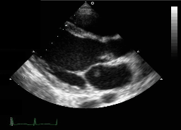

Inima

Rinichi
Ecografia este metoda prin care se pot vizualiza diferite structuri anatomice cu ajutorul ultrasunetelor. Aceste ultrasunete sunt defapt vibrații mecanice cu frecvențe mai mari de 20.000 Hz care au obicei intensitatea redusă
Inima
Rinichi
De-a lungul timpului medicina a jucat un rol important in tratarea si prevenirea bolilor. Cu totii stim ca pentru a rezolvarea problemelor exista niste pasi predefiniti cum ar fi: identificarea acesteia, stabilinirea unor pasi de rezolvare, aplicarea acestora si testarea corectitudinii si a eficacitatii solutiei elaborate. Acest pasi trebuie aplicati si in medicina. Pentru identificarea posibilielor boli este nevoie de proceduri si aparataturi specifice. Avand in vedere ingeniozitatea umana s-au dezvoltat diverse metode dintre care unele sunt mai bune decat altele neavand efecte negative asupra corpului uman. Una dintre cele mai cunoscute si utilizate metode de diagnosticare este: ecografia
Ecografia este metoda prin care se pot vizualiza diferite structuri anatomice cu ajutorul ultrasunetelor. Aceste ultrasunete sunt defapt vibrații mecanice cu frecvențe mai mari de 20.000 Hz care au obicei intensitatea redusă. Practic este vorba de o harta acustica ce deseneaza organe sau tesuturi, in diferite planuri, in functie de pozitia transductorului, de aceea fiind denumita si "stetoscop optic". Cu ajutorul explorarii ecografice pot fi depistate diferite modificari in structura organelor, cum ar diferitele formatiuni tumorale sau suferintele organelor in cadrul unor tulburari metabolice, spre exemplu dislipidemiile, diabetul zaharat sau bolile inflamatorii. In afara modificarilor structurale, ecografia poate depista si modificari in functionalitatea unor organe, prin vizualizarea in timp real a acestora, fiind foarte utila in studiul tubului digestiv, al inimii, al activitatii musculare, etc. In afara vizualizarii structurilor anatomice si a functionalitatii acestora, au aparut si o serie de aplicatii care permit depistarea fluxurilor de sange si studierea acestora - metoda Doppler. Aceasta metoda este utila in studierea vascularizatiei organelor si a formatiunilor tumorale, precum si calitatii vaselor de sange si a afectarii acestora in cadrul unor boli sistemice, cum ar fi hipercolesterolemiile, diabetul zaharat, etc.
Indicatiile de examinare sunt multiple, la ora actuala existand practic putine sau deloc ramuri ale medicinii care sa nu benificieze intr-un fel, de examinare ecografica. Aceasta se datoreaza in principal evolutiilor tehnologice ale aparaturii (atat hardware - sondele cat si software), ceea ce a permis aparitia unor examinari speciale- noi examinari Doppler (HD, B Flow, Ultra-fast), examinari volumetrice - 3D,4D, sonoelastografia, ecografia cu substanta de contrast, ecoendoscopia.